Inhalt Index DeskTop Bronstein

 Algebra und Diskrete Mathematik Klassische algebraische Strukturen Anwendungen von Gruppen Anwendungen in der Teilchenphysik
Algebra und Diskrete Mathematik Klassische algebraische Strukturen Anwendungen von Gruppen Anwendungen in der Teilchenphysik


Die Spin- und Isospinfunktionen eines Teilchens transformieren sich nach irreduziblen Darstellungen der speziellen unitären Gruppe SU(n) in zwei Dimensionen, 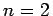, deren Elemente durch drei reelle Parameter chraktersisiert werden. Die zugehörige LIE-Algebra su(2) wird durch die drei infinitesimalen Generatoren
| 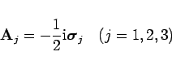 | (5.191a) |
aufgespannt. Die antihermiteschen und spurlosen Matrizen
| 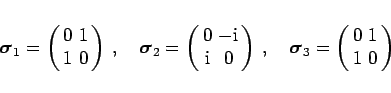 | (5.191b) |
heißen PAULI-Matrizen. Es gelten die Vertauschungsrelationen
Die quantenmechanischen Spin- oder Isospinoperatoren sind gegeben durch
| 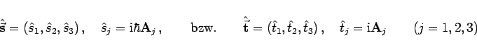 | (5.193a) |
mit den Vertauschungsrelationen
| 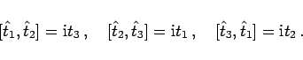 | (5.193b) |
Da die infinitesimalen Generatoren 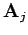 gemäß (5.192) untereinander nicht kommutieren, ist die LIE-Algebra su(2) vom Rang 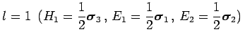.
Die irreduziblen Darstellungen von SU(2) werden also durch eine einzige Zahl 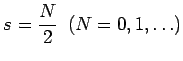 bestimmt. Benachbarte Gewichte unterscheiden sich um  ; die Dimension der Darstellung ist 2s+1 mit den Gewichten 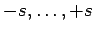.
; die Dimension der Darstellung ist 2s+1 mit den Gewichten 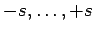.
Hinweis: Die Vertauschungsrelationen (5.192) zwischen den Basiselementen 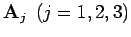 der LIE-Algebra su(2) entsprechen den Vertauschungsrelationen (5.151) zwischen den Generatoren die LIE-Algebra 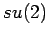, so daß beide Algebren bei identischen Strukturkonstanten isomorph sind. Damit sind auch die Gruppen SO(3) und SU(2) in der Umgebung des neutralen Elements lokal isomorph, was für die globalen Gruppen nicht gilt.
Die Isomorphie von su(2) und so(3) macht auch deutlich, weshalb man den Spin eines Teilchens als Eigendrehimpuls interpretieren kann. Zu jeder Drehung 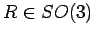 gehören genau zwei Matrizen 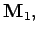 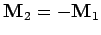 in 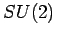. Man bezeichnet SU(2) deshalb auch als Überdeckungsgruppe von  ; SU(2) überdeckt SO(3) zweifach.
; SU(2) überdeckt SO(3) zweifach.